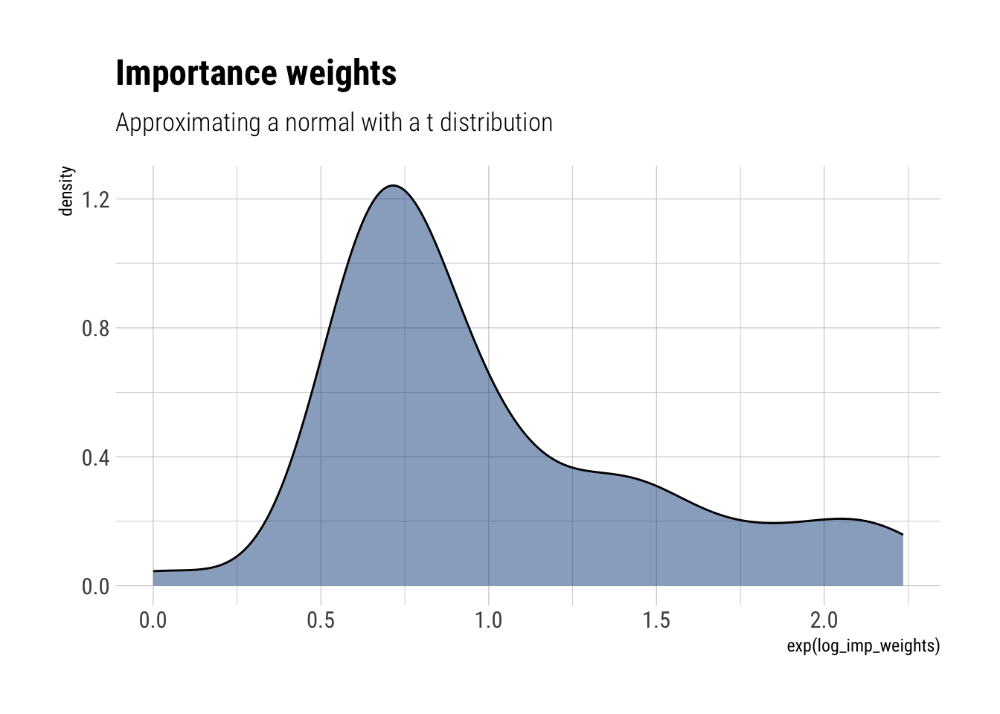
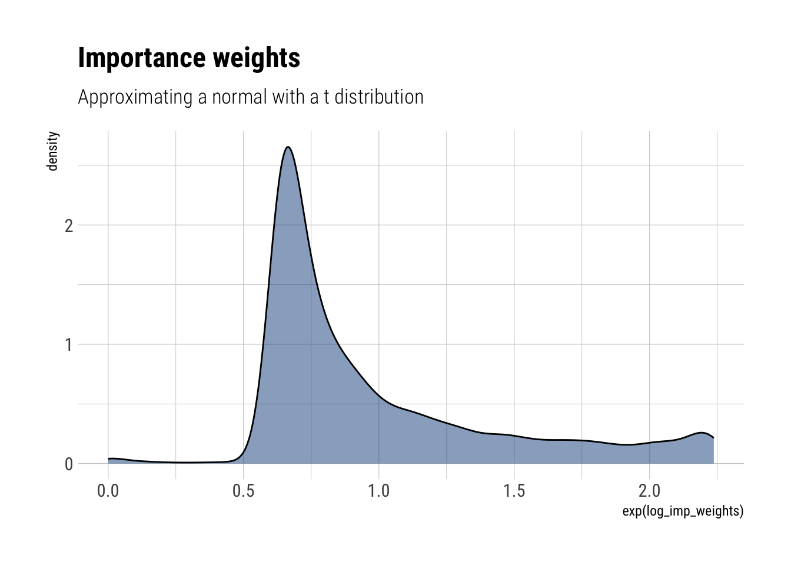
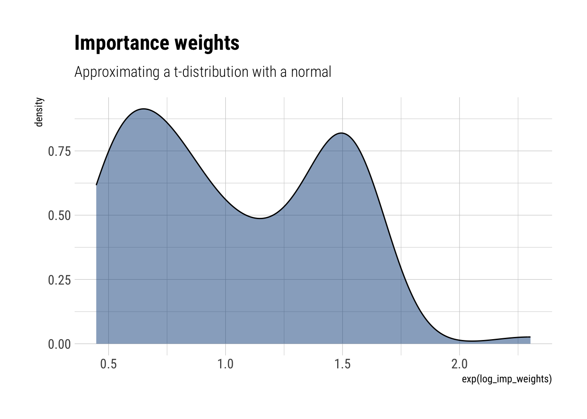
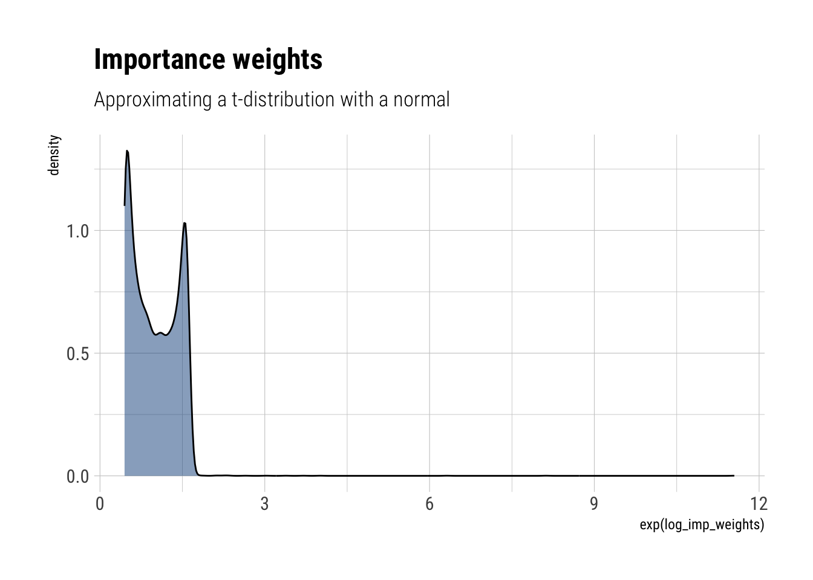

approximate_samples <- rt(100, df = 3)Bayesian Data Analysis (Gelman, Vehtari et. alter) is equals part a great introduction and THE reference for advanced Bayesian Statistics. Luckily, it’s freely available online. To make things even better for the online learner, Aki Vehtari (one of the authors) has a set of online lectures and homeworks that go through the basics of Bayesian Data Analysis.
In this blogpost, I’ll go over one of the main topics of Week 4: Importance Sampling; I’ll also solve a couple of the exercises for Chapter 10 of the book. Week 4 was all about preparing the way for MCMC: if we cannot fully compute the posterior, but we can evaluate an unnormalized version, how can we approximate the posterior distribution?
Importance Sampling
Let \(q(\theta|y)\) be the unnormalized posterior density that we can compute at some values for theta. Then, the posterior expectation is:
\[ E(\theta|y) = \dfrac{\int \theta q(\theta|y) d\theta}{\int q(\theta|y) d\theta} \] However, the denominator is often intractable. Importance sampling, then, reduces to consider another density \(g(\theta)\) from which we can draw direct samples. Then, if we multiply and divide by \(g(\theta)\) in both numerator and denominator:
\[ \frac{\int[\theta q(\theta \mid y) / g(\theta)] g(\theta) d \theta}{\int[q(\theta \mid y) / g(\theta)] g(\theta) d \theta} \] Which can be considered expectations with respect to \(g(\theta)\). Therefore, we can estimate both numerator and denominator by direct sampling from \(g(\theta)\):
\[ \frac{\frac{1}{S} \sum_{s=1}^{S} \left(\theta^{s}\right) w\left(\theta^{s}\right)}{\frac{1}{S} \sum_{s=1}^{S} w\left(\theta^{s}\right)} \]
Where \(w\left(\theta^{s}\right)\) are called the importance weights and are defined thus:
\[ w\left(\theta^{s}\right)=\frac{q\left(\theta^{s} \mid y\right)}{g\left(\theta^{s}\right)} \]
Therefore, importance sampling is sampling from an approximation to the posterior and then correcting the importance that each sample has in the computation of a specific expectation. We correct by the ratio of the unnormalized posterior density to the density of the approximation.
Importance sampling will give precise estimates of the expectation if the weights are roughly uniform. However, if the importance weights vary substantially, the method will yield unsatisfactory estimates. Indeed:
The worst possible scenario occurs when the importance ratios are small with high probability but with a low probability are huge, which happens, for example, if ( q ) has wide tails compared to ( g, ) as a function of ( )
Putting it into practice
Here I’ll solve exercise 6 and exercise 7
Exercise 6
Importance sampling when the importance weights are well behaved: consider a univariate posterior distribution, ( p(y), ) which we wish to approximate and then calculate moments of, using importance sampling from an unnormalized density, ( g() ). Suppose the posterior distribution is normal, and the approximation is ( t_{3} ) with mode and curvature matched to the posterior density.
The ( t_{3} ) has a variance of 3. Therefore, we sample from a normal with standard deviation of 3.
- Draw a sample of size ( S=100 ) from the approximate density and compute the importance ratios. Plot a histogram of the log importance ratios.
First, we draw samples from the approximate density ( t_{3} )
Then, we compute the density \(g(\theta)\) at these points:
approximate_density <- dt(approximate_samples, df = 3, log = TRUE)Finally, we compute the density at the sampled points:
unnormalized_posterior <- dnorm(approximate_samples, log = TRUE, sd = sqrt(3))The log importance weights are then:
log_imp_weights = unnormalized_posterior - approximate_density
data.frame(log_imp_weights) %>%
ggplot(aes(exp(log_imp_weights))) +
geom_density(fill = "dodgerblue4", alpha = 0.5) +
labs(title = "Importance weights",
subtitle = "Approximating a normal with a t distribution")
- Estimate ( (y) ) and ( (y) ) using importance sampling. Compare to the true values.
First, we exponentiate and normalize the weights:
norm_weights <- exp(log_imp_weights)/sum(exp(log_imp_weights))Finally, we compute ( (y) ) simply as the sum of the product of the samples and these weights:
mean_estimate <- sum(approximate_samples*norm_weights)
glue::glue("Mean estimate: {round(mean_estimate, 2)}")Mean estimate: -0.12And ( (y) ):
variance_estimate <- sum(approximate_samples^2*norm_weights) + mean_estimate^2
glue::glue("Variance estimate: {round(variance_estimate, 2)}")Variance estimate: 3.41Which makes for a Monte-Carlo standard error for the mean of:
variance_estimate/100[1] 0.03412438
- Repeat (a) and (b) for ( S=10,000 )
approximate_samples <- rt(10000, df = 3)
approximate_density <- dt(approximate_samples, df = 3, log = TRUE)
unnormalized_posterior <- dnorm(approximate_samples, log = TRUE, sd = sqrt(3))
log_imp_weights = unnormalized_posterior - approximate_density
data.frame(log_imp_weights) %>%
ggplot(aes(exp(log_imp_weights))) +
geom_density(fill = "dodgerblue4", alpha = 0.5) +
labs(title = "Importance weights",
subtitle = "Approximating a normal with a t distribution")
Finally, the computations:
norm_weights <- exp(log_imp_weights)/sum(exp(log_imp_weights))
mean_estimate <- sum(approximate_samples*norm_weights)
glue::glue("Mean estimate: {round(mean_estimate, 3)}")Mean estimate: 0.031variance_estimate <- sum(approximate_samples^2*norm_weights) + mean_estimate^2
glue::glue("Variance estimate: {round(variance_estimate, 2)}")Variance estimate: 2.88Which makes for a Monte-Carlo standard error for the mean of:
variance_estimate/10000[1] 0.0002883421
- Using the sample obtained in (c), compute an estimate of effective sample size using (10.4) on page 266
The effective sample size is:
\[ S_{\mathrm{eff}}=\frac{1}{\sum_{s=1}^{S}\left(\tilde{w}\left(\theta^{s}\right)\right)^{2}} \] where \(\tilde w\) are the normalized weights.
s_eff <- 1/sum(norm_weights^2)
glue::glue("Effective sample size: {round(s_eff,0)}")Effective sample size: 8246Given that most of the weights are very small, we can have a reasonably efficient approximation of the posterior using importance sampling
Exercise 7
Importance sampling when the importance weights are too variable: repeat the previous exercise, but with a ( t_{3} ) posterior distribution and a normal approximation. Explain why the estimates of ( (y) ) are systematically too low.
approximate_samples <- rnorm(100, sd = sqrt(3))
approximate_density <- dnorm(approximate_samples, log = TRUE, sd = sqrt(3))
unnormalized_posterior <- dt(approximate_samples, df = 3, log = TRUE)
log_imp_weights = unnormalized_posterior - approximate_density
data.frame(log_imp_weights) %>%
ggplot(aes(exp(log_imp_weights))) +
geom_density(fill = "dodgerblue4", alpha = 0.5) +
labs(title = "Importance weights",
subtitle = "Approximating a t-distribution with a normal")
norm_weights <- exp(log_imp_weights)/sum(exp(log_imp_weights))
mean_estimate <- sum(approximate_samples*norm_weights)
glue::glue("Mean estimate: {round(mean_estimate, 3)}")Mean estimate: -0.115variance_estimate <- sum(approximate_samples^2*norm_weights) + mean_estimate^2
glue::glue("Variance estimate: {round(variance_estimate, 2)}")Variance estimate: 2.64s_eff <- 1/sum(norm_weights^2)
glue::glue("Effective sample size: {round(s_eff,0)}")Effective sample size: 86Even if we increase the sample size, the problems still remain:
approximate_samples <- rnorm(10000, sd = sqrt(3))
approximate_density <- dnorm(approximate_samples, log = TRUE, sd = sqrt(3))
unnormalized_posterior <- dtnew(approximate_samples, df = 3, log = TRUE)
log_imp_weights = unnormalized_posterior - approximate_density
data.frame(log_imp_weights) %>%
ggplot(aes(exp(log_imp_weights))) +
geom_density(fill = "dodgerblue4", alpha = 0.5) +
labs(title = "Importance weights",
subtitle = "Approximating a t-distribution with a normal")
norm_weights <- exp(log_imp_weights)/sum(exp(log_imp_weights))
mean_estimate <- sum(approximate_samples*norm_weights)
glue::glue("Mean estimate: {round(mean_estimate, 3)}")Mean estimate: 0.03variance_estimate <- sum(approximate_samples^2*norm_weights) + mean_estimate^2
glue::glue("Variance estimate: {round(variance_estimate, 2)}")Variance estimate: 2.11Now, the posterior will have fatter tails than the normal approximation. Therefore, we will have to correct our normal samples with large importance weights, highlighting the inadequacy of our samples generated from the normal to approximate the tails of the posterior. Thus, we cannot adequately account for the tail effect in neither the mean nor the variance. However, the effect is worsened for the variance, as the L2 norm amplifies the consequences of inadequately sampling from the tail.